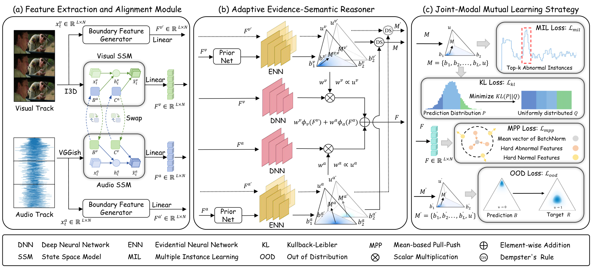
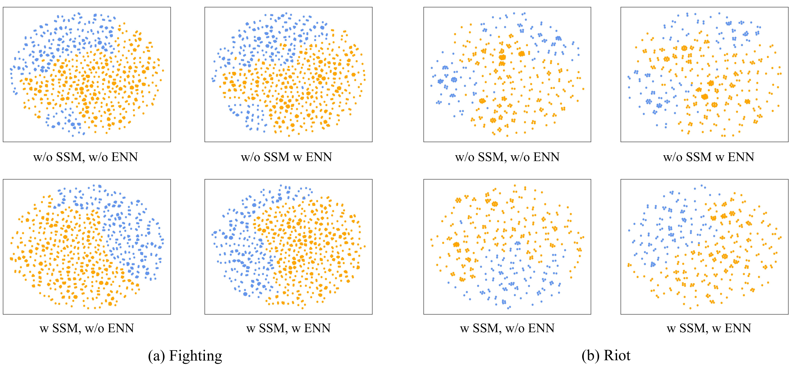
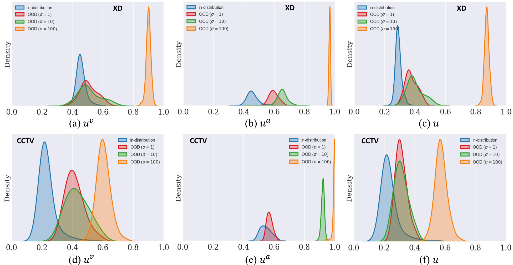

Adaptive Synergistic Evidence Reasoning for Weakly Supervised Video Anomaly Detection
An uncertainty-aware audio-visual anomaly detection framework for robust localization under weak supervision.
Abstract
Weakly supervised video anomaly detection aims to localize abnormal events using only video-level labels, and recent approaches further incorporate acoustic cues to complement visual observations in complex surveillance scenes. However, existing methods still face two major challenges in real-world surveillance scenarios: audio-visual temporal asynchrony and reliability fluctuation across modalities.
Rigid timestamp-level fusion may introduce semantic mismatch when audio and visual cues are not perfectly synchronized, while reliability-agnostic fusion may amplify corrupted modality responses caused by occlusion, illumination degradation, or background noise. To address these issues, we propose an Adaptive Synergistic Evidence Reasoning (ASER) framework for weakly supervised audio-visual anomaly detection.
Specifically, we design a Feature Extraction and Alignment (FEA) module that embeds cross-modal parameter exchange into the hidden-state evolution of state-space models, enabling implicit semantic alignment between asynchronous audio and visual streams. Meanwhile, a Boundary Feature Generator (BFG) synthesizes ambiguous boundary pseudo-features as out-of-distribution samples to regularize decision boundaries. Based on the aligned representations, we further develop an Adaptive Evidence-Semantic Reasoner (AER), which estimates modality-specific epistemic uncertainty through evidential neural networks and converts uncertainty into dynamic gating weights for reliability-aware fusion. In addition, a Joint-Modal Mutual Learning (JML) strategy is introduced to jointly optimize semantic discrimination, feature-manifold compactness, and uncertainty-aware boundary regularization.
Extensive experiments on XD-Violence and CCTV-Fightssub demonstrate that ASER achieves state-of-the-art performance, with 86.68% AP on XD-Violence and 74.76% AP on CCTV-Fightssub. Further robustness analyses under modality perturbation and temporal shift validate the effectiveness of ASER in noisy and temporally misaligned surveillance environments.
Key Contributions
We design a Feature Extraction and Alignment (FEA) module to alleviate audio-visual temporal misalignment and boundary ambiguity under weak supervision. FEA embeds a cross-modal parameter exchange mechanism into the hidden-state evolution of state-space models (SSMs), enabling heterogeneous modalities to interact during temporal modeling and achieve implicit semantic alignment. Meanwhile, a Boundary Feature Generator (BFG) synthesizes ambiguous boundary pseudo-features as out-of-distribution samples, thereby regularizing decision boundaries and improving the separability between normal and anomalous patterns.
We develop an Adaptive Evidence-Semantic Reasoner (AER) to handle modality reliability fluctuations in complex surveillance scenarios. AER calibrates modality-specific evidential distributions with scene-adaptive priors and estimates epistemic uncertainty for each modality. The estimated uncertainty is further converted into dynamic gating weights for competitive feature fusion, suppressing unreliable modality responses while emphasizing high-confidence cues for robust anomaly decision-making.
We propose an Adaptive Synergistic Evidence Reasoning (ASER) framework that integrates implicit cross-modal alignment with explicit evidential reasoning for multimodal weakly supervised anomaly detection. Extensive experiments demonstrate that ASER achieves state-of-the-art performance and exhibits strong robustness under noisy and temporally misaligned audio-visual conditions.
Method

Video Demo
Watch the video demos with real-time anomaly score visualization. As the video plays, the anomaly score curve is drawn progressively.
City of Men (2007)
Deadpool 2 (2018)
Fast & Furious (2009)
wnd3IYH7x1o
Taken 3 (2014)
The Bourne Legacy (2012)
The World Is Not Enough (1999)
hAHXCMRvY_I
Qualitative Analysis

